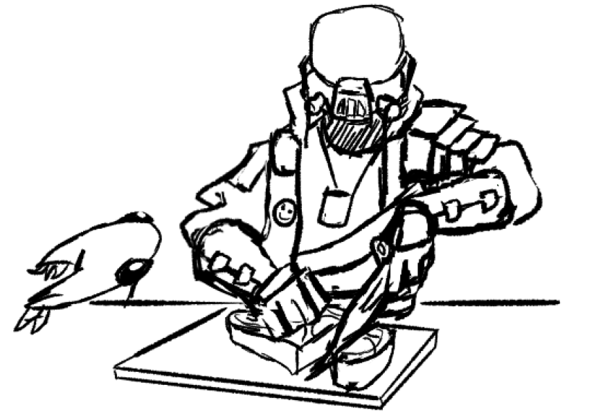
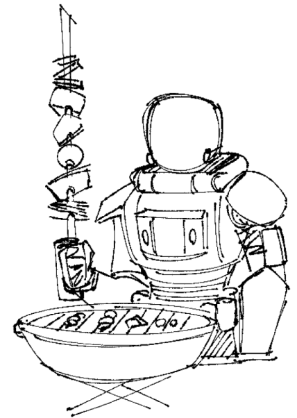
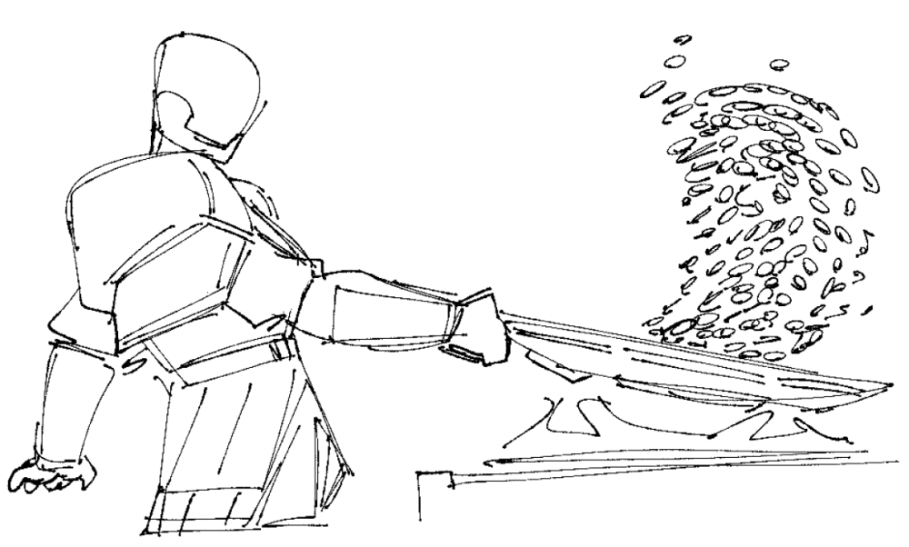
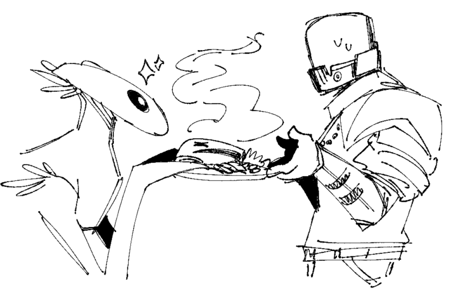
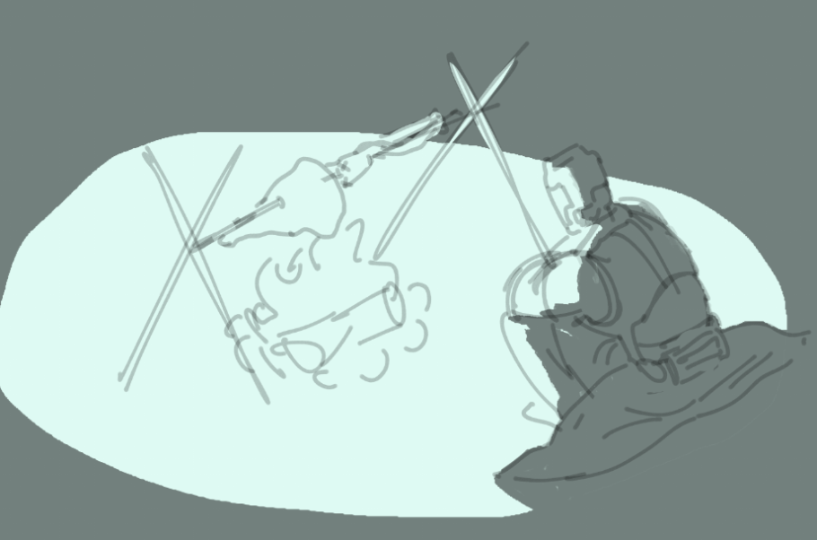
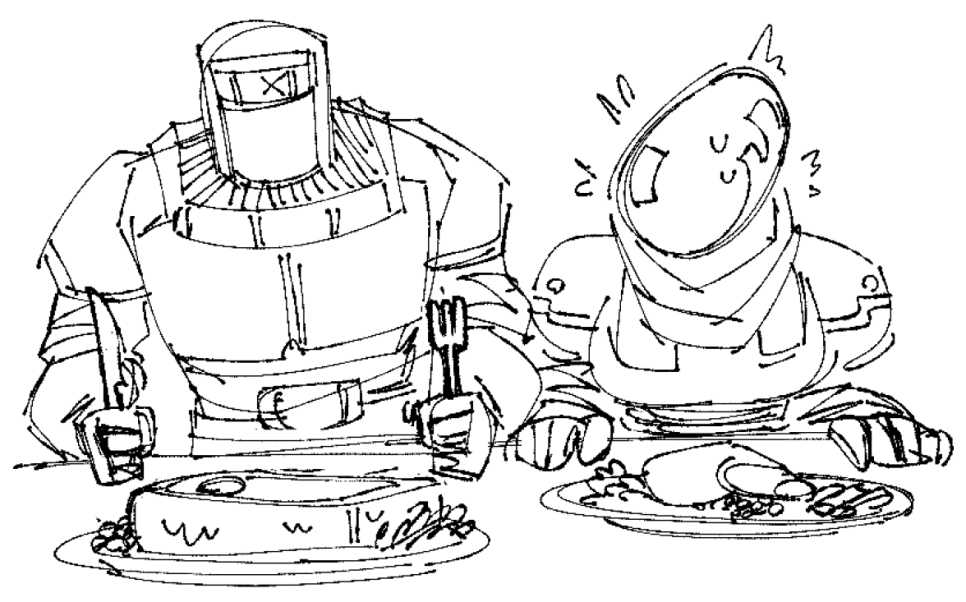
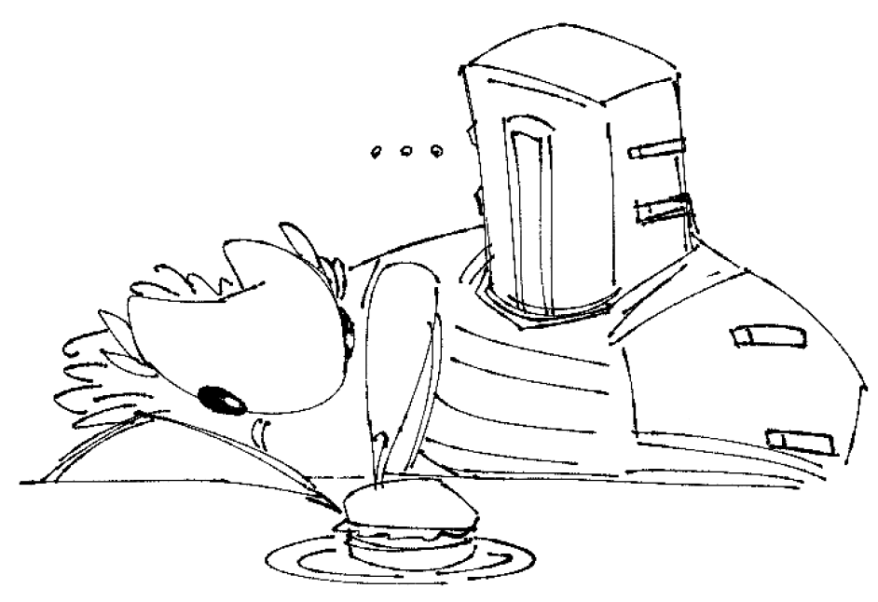
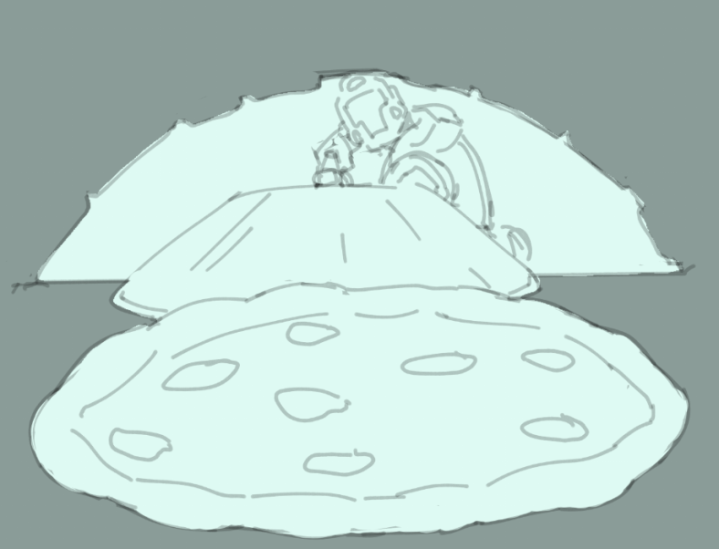
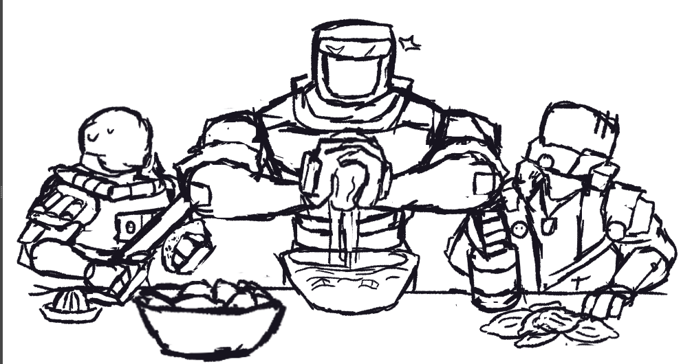

Happy April 1st Starstormers!
While the team works hard on the next update. We hope you enjoy this small labor of love. We've compiled a small cookbook of some of our favorite (even family) recipes. We hope you enjoy them as much as we do!

Baroness Breakfast Burritos

Designed for the front lines, and loaded tooth and nail for quick eating. Able to fill your tummy with its protein, and quick to reheat wherever you please, the Baroness Breakfast Burritos are perfect breakfast.
- Makes 5-7 servings
Ingredients:
- 5-7 tortillas of your choosing. Ideally bigger variety so the burritos arent bursting
- 12oz of ground meat (vegan or real)
- 1 yellow onion
- 2 cloves garlic
- 1 bell pepper
- 1 15oz can black beans
- Soy sauce
- Adobo seasoning
- Honey (to taste)
- Salt (to taste)
- Half a lime
- (Optional) 1 bay leaf
- (Optional) 1/2 cup of salsa
- (Optional) 1 can of corn
Directions:
- Grab a pot and place beans with liquid in on low. Add soy sauce, adobo, honey, and salt to taste. Let simmer while you cook the rest or until the beans have thickned and most liquid is gone.
- Dice the onion and bell pepper. Mince the
- Place half the diced onions and the corn/bay leaf (if you have) in the pot with the beans.
- In a separate pan, cook the ground meat with the rest of the onions and bell pepper.
- Season the meat with soy sauce, adobo, and salt to taste.
- Squeeze the lime over the meat after it is cooked. Add garlic at this point too.
- IMPORTANT! (so they dont get soggy). Place your cooked protein flat on a plate and put it in the fridge. It is important no heat is left so it doesnt make the tortilla soggy when stored
- Repeat the same step for your beans (place in a bowl instead of plate)
- Once everything is cooled, assemble your burritos. Place the protein, beans, and salsa in the tortilla. Wrap in aluminum foil and place in the freezer. Place burrito in fridge the day before you plan to eat it.
Notes:
- You can also throw rice in here too just in keep in mind these will be STUFFED if you do.
- You can swap out the ground meat for more beans if you'd like.
- Tomato paste is also a nice addition to the beans if you want a thicker consistency.
- I don't have cheese or sour cream since its mixed on how well it freezes/thaws, and I am trying to keep saturated fats low. If you want to add it, I would recommend adding layering it on top of the meat during assembly.
Knightly Meal Prep Chili

Variant, simplified versions of this recipe are favored by Aeolan knights out in the field, for its relative ease of creation and storage with what's available on hand.
- Makes: 5-7 servings
Ingredients:
- 16oz tempeh (or sub for your protein choice)
- 3 cans of black beans (with the bean liquid)
- 28oz of tomato sauce
- 1 cup veggie broth
- 10oz Mushrooms
- 3 cloves garlic
- 1 Onion
- Olive Oil
- Seasonings: Chili Seasoning, Paprika, Cinnamon, Adobo
Directions:
Tempeh:
- Cut tempeh into small crouton sized cubes
- Optional: If you want to remove some of the bitterness of tempeh. You can put it in a microwave safe bowl with salted water. Microwave for 3 minutes and drain it. (the bowl will be very hot!! You might need multiple bowls).
- Add the tempeh to the pot
Chili:
- Cut the onion and mince the garlic to the thickness of your choosing
- Throw everything into a large pot and bring to a boil. Stirring occasionally as to not burn the bottom. Dont add seasoning yet!
- Once boiling set heat to low and let simmer until the chili has been reduced to your desired consistency. Make sure to stir periodically so chili contents dont burn (I like mine sludgy so I simmer for 30ish minutes)
- Season the chili to taste mix it up
- Put the chili into 5-7 containers and place in Fridge. Can keep for 2 weeks, but loses most of its flavor after 1 week
Notes:
- We dont add seasonings before reducing because when reducing the chili you can make it overly salty
- We also dont sautee garlic/onion because it can be overcooked in the pot when simmering
Chirrific Pesto

Share with your friends/guests/self/forcefully acquainted murderslave! They're bound to love it. Not actually made of Chirr- but is just as delightful.
- Makes: 2-4 servings
Ingredients:
- 2 cups basil leaves, packed
- 6 tbsp. water
- 4 tbsp. Parmesan cheese, grated (vegan parm also works here too)
- 1/4 cup pine nuts
- 1 tbsp. olive oil
- 3 cloves garlic
- 2 tbsp. lemon juice
- 1/4 tsp. salt
- 1/4 tsp. black pepper
- Pasta of your choice (Fusilli or any pasta with ridges that can capture/keep sauce is recommended)
Directions:
- Wash the basil leaves and pat dry
- Put all the ingredients except pasta into a food processor or blender
- Blend the pesto until smooth and the color is a light green. Pesto normally isnt smooth but this recipe is lower on fat so the smoothness has better mouth feel.
- Store the pesto in a container and set aside in the fridge
- Cook pasta according to package instructions
- Drain/rinse the pasta
- Combine the pesto sauce and pasta. Use as much of the pesto you want, but normally this serving of pesto can coat a whole box of Fusilli
Nuclear Mushroom cream with Pasta

Derived from samples scraped from the bottom of a strangely vacant Nucleation suit... supposedly. All we really know about it is that it's pretty dang delicious.
- Makes: 3-4 servings
Ingredients:
- 500 Gr of Mushrooms
- 400 Grs of Heavy Whipping Cream
- A teaspoon of Chili powder
- 2 slices of your desired cheese
- Half a teaspoon of Pepper
- Cornstarch
- One bag of pasta to your taste
Directions:
Pasta:
- Using a sufficiently large pot, season enough water to taste with salt then bring to a boil.
- Place your pasta onto the pot, stir to avoid the pasta from sticking to each other
- Cook until Al Dente or to your preference
Mushroom Cream:
- Pour the entire contents of your mushrooms into a pot, if the mushrooms are too much for your pot, cook them until they shrink in size
- Once all the mushrooms are in and heavily cooked, add 400 grams of Heavy Whipping Cream
- Pour the teaspoon of Chili powder, half a teaspoon of pepper, and salt to taste.
- Put the two slices of cheese into the cream, mix until combined, leave to cook.
Notes:
The combination of the Fats and Cream will give your mushroom cream a heat that doesnt overstay its welcome. Feel free to go with more heat if you can handle it.
=CONFIDENTIAL TRANSMISSION= =KEYCODE: ABTKODA55591205= =AEOLAN CONFEDERACY=
=[To any knights who hear this, there is a new quest for you.]
=[To reclaim the honor of your kind.]
=[To brave the horrors of a yet-unreveled battlefield.]
=[To slay gods.]
=[If you seek a path to glory, heed these instructions.]
=[Go to [REDACTED]. Find the sword.]
=[Carve a path.]
Nemesis
Mule

A stranger was quoted this as finding the recipe for this scribbled on a note left behind at their shop in place of cash. Regardless of where it came from, it sure is delicious way to cure those ethereal blues.
Ingredients:
- 1.5 oz Vodka (or opt out of the vodka and sub for some fruit juice)
- 5 oz Coca-Cola
- 1/2 oz yuzu juice (you can use concentrate just make sure to dilute)
- 1 oz Ginger Beer (get the real shit not Canada Dry)
- Tiny pinch of salt
Directions:
- In your drinking vessel add ice.
- Combine the vodka, coke, yuzu juice, ginger beer, and salt to the vessel.
- Stir and enjoy.
Notes:
- Nemesis survivors do NOT like Pepsi or Pepsi-Co owned products
- You can switch out the coke for a health gut soda like Olipop or Poppi, but might not taste as good (and you already have vodka....)
Nemesis Lemonade Slush

Said to be the creation of a fallen god when their lemonade stand was destroyed by an arrogant interloper. This slush may seem like its the stuff of legends, but it is actually the stuff of easy to find cargo shipments.
- Makes 4-6 servings
Ingredients:
- 600g frozen berries
- Juice of 2 and a half lemons
- Juice of half a lime
- Pinch of salt
- 3 tbsp of a dark honey (or agave nectar)
- Ice cubes
- 225ml soda water (but regular water is ok too)
Directions:
- Blend everything in a blender and serve immediately.
Notes:
- Stick with the classic berries like raspberry, blueberry, blackberry, and strawberry. Ideally the former 3 for their higher tarntness
- You can also use yuzu here if you'd like!
- Adjust the honey to your ideal taste
Do you see the light? Do you hear the chants of song?
The Bulwark has perished, but his soul lives on. In us.
In all of us. The very world harbors His life, as well.
Do you not believe me?
Ha. Simply look around. You will find evidence of His presence soon enough.
Executioner Apple cobbler

A highly favored dessert in the mess halls of the Aeolan Confederacy. Just as sweet and rich as the victory that warranted the feast.
- Makes: 4-8 servings
Ingredients:
- 4 apples (granny smith or whatever) slice into quarter inch or so pieces
- 1 cup water or apple juice
- 1/3 cup brown sugar , packed
- 1 Tablespoon cornstarch
- 1 Tablespoon lemon juice
- 1/2 teaspoon vanilla extract
- 1 teaspoon ground cinnamon
- 1/2 teaspoon ground nutmeg
- 1/8 teaspoon salt For the batter:
- 1 cup all-purpose flour
- 1 cup granulated sugar
- 2 teaspoons baking powder
- 1/4 teaspoon salt
- 3/4 cup milk
- 5 Tablespoons butter , melted
- ground cinnamon for topping
Directions:
Apple Filling:
- Stir together water, brown sugar, cornstarch, lemon juice, vanilla, cinnamon, nutmeg, and salt in a large saucepan.
- Stir in apples.
- Cook over medium heat for 3-5 minutes.
Batter:
- In a large bowl mix together the flour, sugar, baking powder, and salt.
- Stir in the milk and melted butter, just until combined.
Assembly:
- Pour the apple filling into whatever oven safe dish will fit it and then pour the batter over it.
- Sprinkle some cinnamon and bake at 400 for 45 minutes or until a knife inserted into the middle passes through clean.
NemArti's Spellbinding Black Bean Brownies

Requiring near thousand time dilation cycles to perfect. These black beans brownies are sure to be a critical point of the party.
Ingredients:
- 1 15oz can black beans (aim for no salt/low sodium)
- 1 cup pure date syrup
- 1/2 cup unsweetened cocoa powder
- 3/4 cup rolled oats
- 1 tsp baking powder
- 1/2 tsp baking soda
- Semisweet chocolate pieces
- 1 tsp vanilla extract
- pinch of salt
- (Optional) unsalted unshelled pistachio nuts, finely chopped or walnuts
Directions:
- Preheat the oven to 350°F. Line an 8x8-inch cake tin with parchment paper or a 9x9 baking tray. You can also use oil/butter/cooking spray instead of parchment paper
- Drain/rine the black beans. Combine the black beans and date syrup in a food processor and blend until smooth.
- Add the cocoa powder, rolled oats, baking powder, and baking soda to the food processor and blend until smooth.
- Add the vanilla extract and salt to the food processor and blend until smooth.
- Pour the batter into the prepared cake tin or tray and smooth the top with a spatula.
- Sprinkle the chocolate pieces and nuts (if you have) over the top of the batter.
- Bake for 25-35 minutes, or until a toothpick inserted into the center comes out clean. If you used a larger tray you might need a shorter baking time.
- Ideally allow your brownies to cool on a wire rack (or in the fridge) before cutting into squares. (They will be very soft and crumbly when hot.)
Notes:
- Adapted from: https://www.youtube.com/watch?v=PeEQPGYKcGE (which itself is taken from ForksOverKnives)
- You could add a bit of gouchang or cayenne pepper to give it a bit of a kick.
- You can also add a bit of instant coffee to enhance the chocolate flavor.
- The salt is there to enhance the sweetness of the brownies.
- Add some butter if you want to play heart health on Typhoon.